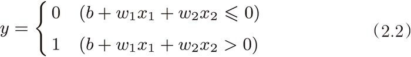
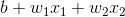

和
和  称为权重。如式（2.2）所示，感知机会计算输入信号和权重的乘积，然后加上偏置，如果这个值大于 0 则输出 1，否则输出 0。下面，我们使用 NumPy，按式（2.2）的方式实现感知机。在这个过程中，我们用 Python 的解释器逐一确认结果。
称为权重。如式（2.2）所示，感知机会计算输入信号和权重的乘积，然后加上偏置，如果这个值大于 0 则输出 1，否则输出 0。下面，我们使用 NumPy，按式（2.2）的方式实现感知机。在这个过程中，我们用 Python 的解释器逐一确认结果。现在，我们用 Python 来实现刚才的逻辑电路。这里，先定义一个接收参数 x1 和 x2 的 AND 函数。
def AND(x1, x2):
w1, w2, theta = 0.5, 0.5, 0.7
tmp = x1*w1 + x2*w2
if tmp <= theta:
return 0
elif tmp > theta:
return 1
在函数内初始化参数 w1、w2、theta，当输入的加权总和超过阈值时返回 1，否则返回 0。我们来确认一下输出结果是否如图 2-2 所示。
AND(0, 0) # 输出0
AND(1, 0) # 输出0
AND(0, 1) # 输出0
AND(1, 1) # 输出1
果然和我们预想的输出一样！这样我们就实现了与门。按照同样的步骤，也可以实现与非门和或门，不过让我们来对它们的实现稍作修改。
刚才的与门的实现比较直接、容易理解，但是考虑到以后的事情，我们将其修改为另外一种实现形式。在此之前，首先把式（2.1）的 θ 换成 -b，于是就可以用式（2.2）来表示感知机的行为。

式（2.1）和式（2.2）虽然有一个符号不同，但表达的内容是完全相同的。此处，b 称为偏置， 和 称为权重。如式（2.2）所示，感知机会计算输入信号和权重的乘积，然后加上偏置，如果这个值大于 0 则输出 1，否则输出 0。下面，我们使用 NumPy，按式（2.2）的方式实现感知机。在这个过程中，我们用 Python 的解释器逐一确认结果。
>>> import numpy as np >>> x = np.array([0, 1]) # 输入 >>> w = np.array([0.5, 0.5]) # 权重 >>> b = -0.7 # 偏置 >>> w*x array([ 0. , 0.5]) >>> np.sum(w*x) 0.5 >>> np.sum(w*x) + b -0.19999999999999996 # 大约为-0.2（由浮点小数造成的运算误差）
如上例所示，在 NumPy 数组的乘法运算中，当两个数组的元素个数相同时，各个元素分别相乘，因此 w*x 的结果就是它们的各个元素分别相乘（[0, 1] * [0.5, 0.5] => [0, 0.5]）。之后，np.sum(w*x) 再计算相乘后的各个元素的总和。最后再把偏置加到这个加权总和上，就完成了式（2.2）的计算。
使用权重和偏置，可以像下面这样实现与门。
def AND(x1, x2):
x = np.array([x1, x2])
w = np.array([0.5, 0.5])
b = -0.7
tmp = np.sum(w*x) + b
if tmp <= 0:
return 0
else:
return 1
这里把 -θ 命名为偏置 b，但是请注意，偏置和权重 、 的作用是不一样的。具体地说， 和 是控制输入信号的重要性的参数，而偏置是调整神经元被激活的容易程度（输出信号为 1 的程度）的参数。比如，若 b 为 -0.1，则只要输入信号的加权总和超过 0.1，神经元就会被激活。但是如果 b 为 -20.0，则输入信号的加权总和必须超过 20.0，神经元才会被激活。像这样，偏置的值决定了神经元被激活的容易程度。另外，这里我们将 和 称为权重，将 b 称为偏置，但是根据上下文，有时也会将 b、、 这些参数统称为权重。
偏置这个术语，有“穿木屐”2的效果，即在没有任何输入时（输入为 0 时），给输出穿上多高的木屐（加上多大的值）的意思。实际上，在式 (2.2) 的  的计算中，当输入
和
为 0 时，只输出偏置的值。
2因为木屐的底比较厚，穿上它后，整个人也会显得更高。——译者注
接着，我们继续实现与非门和或门。
def NAND(x1, x2):
x = np.array([x1, x2])
w = np.array([-0.5, -0.5]) # 仅权重和偏置与AND不同！
b = 0.7
tmp = np.sum(w*x) + b
if tmp <= 0:
return 0
else:
return 1
def OR(x1, x2):
x = np.array([x1, x2])
w = np.array([0.5, 0.5]) # 仅权重和偏置与AND不同！
b = -0.2
tmp = np.sum(w*x) + b
if tmp <= 0:
return 0
else:
return 1
我们在 2.2 节介绍过，与门、与非门、或门是具有相同构造的感知机，区别只在于权重参数的值。因此，在与非门和或门的实现中，仅设置权重和偏置的值这一点和与门的实现不同。